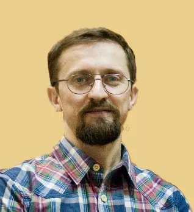

Крыжановский Евгений Григориевич
Врач-психиатр, психотерапевт, натуропат
Я твердо уверен, что резервы психики каждого человека огромны. И при
правильном подходе можно существенно улучшить состояние психического
здоровья человека при ЛЮБОЙ патологии. Важно желание и настойчивый труд
самого пациента в сотрудничестве со специалистом. Ищу подход к каждому
человеку и стараюсь научить его самостоятельно, без врачебной поддержки
сохранять стабильное состояние психики и здоровья в целом. В этом вижу
свою задачу как психотерапевта. За время работы врачом-психиатром я
убедился, что наилучший результат приносит комплексный подход. Поэтому,
кроме традиционной фармакологической терапии, активно использую
психотерапию, фитотерапию (лечение травами), лечебное питание,
гомеопатию и специальные физические упражнения. Годы каждодневного труда
помогли создать личные наработки в области психотерапии и психиатрии, и,
как результат - тысячи довольных пациентов за 17 лет активной практики.
Услуги врача
индивидуальный прием в кабинете, выезд на дом, консультации он-лайн
нестандартные методы лечения и сочетание разных подходов для
наилучшего результата
помощь при панических атаках, повышенной тревожности, фобиях,
депрессиях, навязчивых мыслях и действиях, бессоннице
эффективная профилактика рецидивов и обострений психических
расстройств разного спектра и разной степени тяжести
реабилитация после лечения в психиатрическом стационаре
эффективная помощь пожилым пациентам, профилактика старческого
слабоумия для активного и здорового долголетия
Консультации
В каких ситуациях я могу помочь:Личностные проблемы
- возрастные кризисы
- проблемы самореализации
- личностные тупики
- зависимые отношения
Психические расстройства
- первичные эпизоды и обострения шизофрении
- биполярное расстройство
- депрессия
- старческое слабоумие
- профилактика рецидивов
- лечение обострений
- восстановление и реабилитация после стационарного лечения
Помощь при неврозах
- панические атаки и фобии
- депрессивные расстройства
- тревожные расстройства
- психосоматические заболевания
Семейные проблемы
- супружеские конфликты
- подростковый кризис
- конфликты родителей и детей
- проблемы взаимоотношений с пожилыми родителями
- помощь родственникам людей, страдающих психическими расстройствами
Профессиональное образование
- 1990 - 1993 гг. - Киевское медицинское училище №2
- 1993 - 1999 гг. - Национальный Медицинский Университет им. А.Богомольца (лечебное дело)
- 1999 - 2000 гг. интернатура по специальности "Медицина неотложных состояний"
- 2001 - 2002 гг. специализация по психиатрии (Киевская медицинская академия последипломного образования)
- 2011 - 2012 гг. - специализация по психотерапии под руководством д.м.н., проф. Пилягиной Г.Я. (Киевская медицинская академия последипломного образования)
- 2015 г. - курсы по электропунктурной диагностике и информотерапии (НДИ Информационной медицины, Киев)
- 2016 г. - специализация по гомеопатии
Выступления на телевидении
Отзывы
Доктор Крыжановский на протяжении нескольких лет консультировал по
поводу деменции моей свекрови. Очень внимательный, грамотный, думающий
доктор, разумно сочетающий в своей работе традиционные, проверенные
временем методы лечения с самымы современными инновациями. Очень
помогали и поддерживали консультации по поводу коррекции нашего
отношения к болезни и к больной. Так же, по моей рекомендации знакомые
консультировались по поводу постановки диагноза больной шизофренией.
Они остались очень довольны консультацией, которая включила в себя не
только постановку точного диагноза, но и очертила основные направления
в лечении и даже пошаговую рекомендацию по восстановлению группы
инвалидности. Всегда рекомендую доктора Крыжановского своим знакомым
если у них возникает потребность. Ирина Гафенко, 55 лет, 068-357-8119
сказать кратко, Крыжановский Е.Г. - это человек, который умеет слушать
и не умеет оставаться безразличным. Не часто встречаешь таких среди
людей разных профессий, а среди врачей и подавно. Навязчивые
состояния, комплексы, фобии, фантазии, обиды, страхи, и т.п., то, что
принято называть "тараканами в голове" или "диагнозами" -
рассматриваются, называются, классифицируются и раскладываются по
полочкам. Собственно, встраче с врачом-психиатром становиться не
унижением, формальностью или жесткой необходимостью, а тем исцеляющим
импульсом, который помогает узнать себе и других, помогает не только
преодолеть тяжелые жизненные ситуации(что тоже не мало), но и
поправить свое здоровье, делая ставку не на медикакаментозную
зависимость, а на пробуждение внутренних ресурсов. Комплексный подход
к лечению, умение услышать, тренировка навыков решения жизненных
задач, надежность, порядочность и уважение к личности и личностным
обстоятельствам. В.М.Бехтеров сказал, что если больному после
разговора с врачом не стало легче, значит это не врач. Я с
уверенностью могу сказать, что Евгений Григориевич - ВРАЧ Мой тел.
+380 96 600 77 41, Людмила, 40 лет
У меня долгая история, не буду называть свой диагноз, скажу только,
что за 12 лет было 6 госпитализаций, я сменила 5 врачей, и вплотную
стоял вопрос об оформлении инвалидности, от которой я упорно
отказывалась. На момент моего знакомства с Евгений Григорьевичем было
состояние полной потерянности, куча комплексов, заблуждений и страхов,
как запуганный зверёк. Не думайте, что всё произойдет по щелчку
пальцев, это длительный процес, всё индивидуально и зависит от вашего
состояния и готовности работать над собой. Возможно нужна семейная
терапия, и возникнет необходимостью провести совместную консультацию с
вашим мужем/женой, близкими родственниками. В результате терапии
изменилось представления о себе, семье, окружающих, произошла
очередная переоценка ценностей, расстановка приоритетов, личсностный
рост, самореализация. Я обрела мир и душевное равновесие. На каком-то
промежуточном этапе, этот Врач, заменил мне и маму и папу; на
следующем этапе, я сама себе ставла и папой и мамой. Ещё один момент
для тех кто говорит:-" молитвы и гомеопатию - не предлагать". Никакую
серьезную болезнь невозможно вылечить с помощью одной таблетки, -
нужен комплекс процедур и время: неделя, месяц, а может и больше. Так
же и здесь, если не верить, и ничего не делать, то ничего и не
изменится. Я благодарна Богу, что на моём пути встретился такой
человек, который "вытащил" меня из затяжной 4- ч летней депресии,
наполнил мою жизнь смыслом
Меня зовут Наталья. Евгения Григориевича мне рекомендовала подруга.
Посетив несколько психологов и психотерапевтов до встрачи с ним, я
никак не выходила из замкнутого круга своих проблем. Становилось все
хуже. Мне нужен был верующий человек, способный понять и мой образ
жизни, и мои смысловые поиски. Евгений Крыжановский оказался именно
тем врачем, который сочетает в себе прекрасные профессиональные
качества, строгость и требавательность к себе и клиенту,
ортодоксальные взгляды при лечении нервных и душевных заболеваний,
помогает найти и осознать корень проблемы, побуждает к действию и
решимости, постоянно развивается и углубляет свои знания, как
специалист. В случае если ты не готов принимать медикаменты(мой
вариант), Евгений Григориевич предлагает множество вариантов для
преоделения самого себя!!! Выражаю огромную благодарность за
психотерапевтическую помощь и терпение таких чудиков, как я:).
Обращалась я с паническими атаками, страхами и тревожным
расстройством. Слава Богу, что встретила нашего ЕГ! СПАСИБО ВАМ!!!
Хочется выразить огромную благодарность Евгению Крыжановскому за
помощь. Становилось Евгений Григориевич Не просто вытащил меня из
депрессии но и помог решить множество моих психологических проблем
которые тянулись из детства и мешали жить. Я очень долго искала
специалиста, пыталась найти информацию самостоятельно обращалась за
помощью к родителем, но только Евгений Григориевич, благодаря своему
опыту и уму смог разглядеть и помочь решить мои проблемы. К
Крыжановскому я попала в ужасно разобранном состояние. На тот момент я находилась в Испании и
после первого же сеанса по телефону приехала в Киев, продолжать лечение уже лично. Сейчас
вспоминаю то время как страшный сон. Евгений Григориевич помог мне справиться с целым набором
психологических проблем начиная от бессонницы заканчивая психозом и депрессией с мыслями о суициде.
Ситуаця видилась безвыходной но оказалась решаемой. После регулярного общения во время сеансов,
используя все советы я пришла к нормальному эмоциональному, психологическому и физическому состоянию.
Кроме того, Евгений Григориевич помог мне наладить отношения с родителями, избавиться от застралеых комплексов
и страхов. Сейчас я самостоятельно научилась справляться с трудностями, не смотря на то что это казалось невозможным.
Евгений Григориевич потрясающий специалист и профессионал своего дела который действительно помогает и дает доглострочный результат.
Я бесконечно благодарна и иногда обращаюсь за советом.
Мария